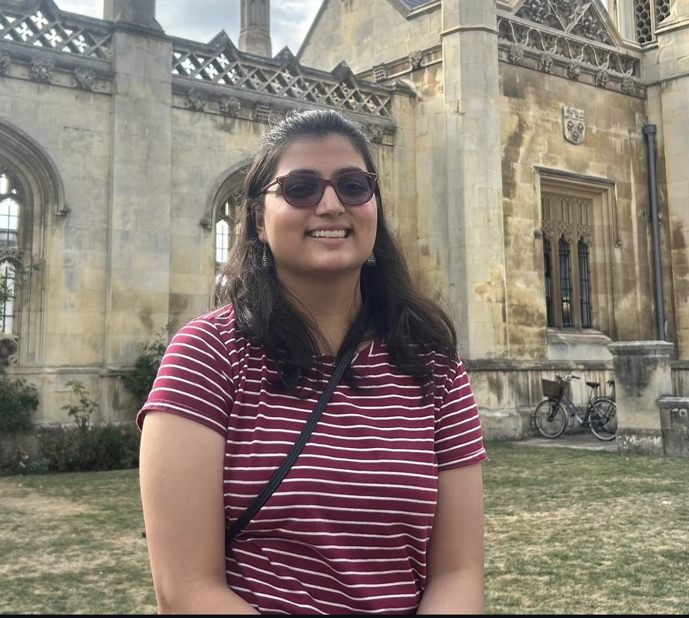

Scientist · Musician · Writer
I search the universe for answers, working across astronomy, applied mathematics, physics, and music. I use computation for solving mathematical problems; writing and music for emotional ones. I build from scratch, from Python libraries to music albums. Passionate about the law, pilates, and dogs.

I'm Sania — a physicist and mathematician by training. I hold a BSc in Physics (First Class, 90%) from Miranda House, University of Delhi, and an MSc in Applied Mathematics (Merit) from Imperial College London (2023–25).
In parallel, I've spent years building a life in music — playing, producing, composing. My debut album is a deeply personal body of work written and produced entirely by me. It's planned release is in 2026.
Recently, I've started publishing essays on various topics I'm curious and passionate about - ranging from science, music, biographies or just life.
When I'm not at a desk or behind an instrument, I'm reading about law, practicing yoga, or spending time with dogs.
Open to collaborations, PhD enquiries, session work, press features, and conversations that go somewhere interesting.